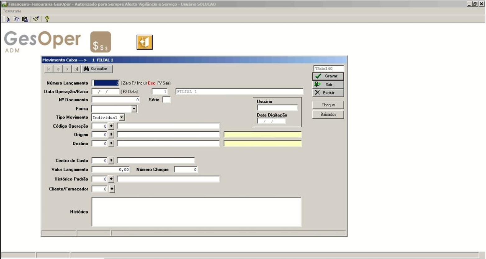

📥 Tesouraria - Lançamento de Caixa
Pode ser acessado pelo seguinte caminho: Gesoper >> Financeiro >> Tesouraria >> Lançamento de Caixa
Visão Geral do Processo
O módulo de Lançamento de Caixa permite registrar movimentações financeiras, como pagamentos, recebimentos, saques, depósitos, transferências e ajustes de saldo, de forma organizada e integrada ao sistema financeiro do GesOper. Ele suporta operações individuais ou em lote, garantindo maior controle e precisão nas transações financeiras da empresa.
Flexibilidade de Operações: Suporta diversos tipos de movimentações, como despesas, receitas, transferências e ajustes.
Integração com Contas: Conexão direta com contas a pagar/receber e plano de contas para maior rastreabilidade.
Automatização: Campos como usuário e data de digitação são preenchidos automaticamente, reduzindo erros.
Fluxo de Processamento
Selecione a Filial onde será realizado o lançamento. Deixe o campo Número do Lançamento como “0” e pressione TAB. Preencha: Data da Operação/Baixa (use F2 para inserir a data atual); Usuário e Data da Digitação são preenchidos automaticamente; Nº Documento e Série são opcionais, para cupom ou TED; Forma de Pagamento deve ser escolhida adequadamente, usada como filtro em relatórios; Tipo de Movimento pode ser Individual ou Lote.
A conta Origem representa a saída/débito, enquanto a conta Destino representa a entrada/crédito. Exemplos: Para Pagamento, Origem é Banco/Caixa e Destino é Despesa/Passivo; para Recebimento, Origem é Cliente/Ativo e Destino é Caixa/Banco.
Complete os campos adicionais para maior detalhamento: Centro de Custo pode ser preenchido manualmente ou herdado de lançamentos anteriores; Valor do Lançamento é o valor a ser quitado; Número do Cheque é habilitado apenas para forma de pagamento “Cheque”; Histórico Padrão é uma descrição breve, cadastrável via Tabelas de Apoio; Cliente/Fornecedor e Histórico adicionam mais detalhes.
Tipos de Operações
Op. 1 – Despesas à Vista: Origem: Caixa/Banco | Destino: Despesas Diversas.
Op. 3 – Receitas à Vista: Origem: Receitas Diversas | Destino: Caixa/Banco.
Op. 5 – Pagamentos: Origem: Caixa/Banco | Destino: Despesas Diversas.
Op. 6 – Recebimentos: Origem: Receitas Diversas | Destino: Caixa/Banco.
Inclui consulta de títulos com filtros, legenda por cores (vermelho = vencido), suporte a pagamento parcial, juros, multa e histórico automático. Pagamentos parciais geram novo lançamento para o saldo restante.
Permite quitar vários títulos simultaneamente com seleção em massa. Suporta manutenção de baixa para cada título, utilizando códigos de operação 5 ou 6.
Op. 7 – Saque: Origem: Banco | Destino: Caixa.
Op. 8 – Depósito: Origem: Caixa | Destino: Banco.
Op. 10 – Transferência entre Filiais: Requer cadastro de conta empréstimos no plano de contas. Passos: (1) Origem: Banco | Destino: Conta Empréstimos; (2) Origem: Conta Empréstimos | Destino: Banco.
Op. 11 – Transferência Interna: Origem: Banco | Destino: Banco (mesma filial).
Op. 50 – Ajuste: Registra entrada ou saída direta em uma conta, preenchendo apenas Origem (saída) ou Destino (entrada).
Benefícios Operacionais
⚡ Agilidade
Reduz o tempo de registro de movimentações com preenchimento automático e processos em lote.
🎯 Precisão
Minimiza erros com validações automáticas e integração com contas a pagar/receber.
📊 Controle
Visibilidade total das movimentações financeiras, com relatórios e filtros detalhados.